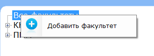
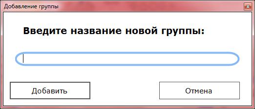

Вы самостоятельно можете добавить/редактировать новый факультет или добавить/редактировать новую группу.
Для добавления факультета Вам необходимо кликнуть правой кнопкой мыши на вкладке "Все факультеты"

и выбрать пункт "Добавить факультет" или же по добавленном ранее факультету(здесь будет доступно редактирование выбранного факультета). В открывшемся окне ввести название факультета и нажать "Добавить" или "Изменить" (если выбран режим редактирования).
Для добавления группы Вам необходимо кликнуть правой кнопкой мыши на факультете,в который нужно добавить группу
и выбрать пункт "Добавить группу" или нажать правой кнопкой по группе, находящейся в том факультете, в который вы хотите добавить новую группу(тут будет доступно редактирование). В открывшемся окне ввести название группы и нажать "Добавить" или "Изменить" (если выбран режим редактирования).

После этого внесенные данные появятся в списке.